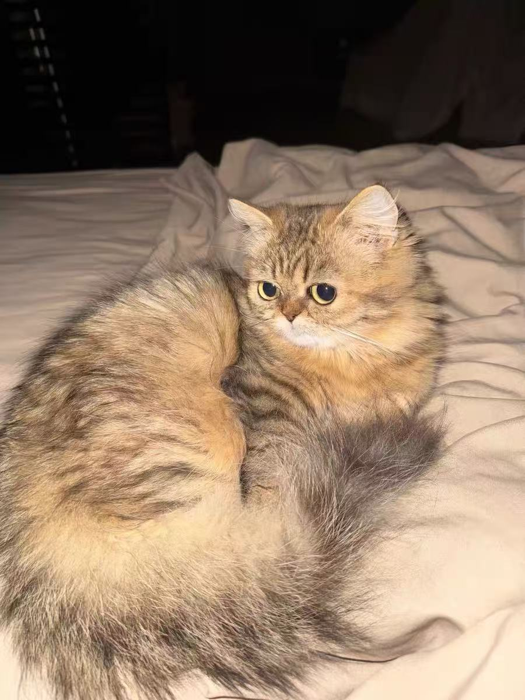

📖 可乐的故事
可乐是一只温柔安静的小暖男！它有着金灿灿的毛发和白白的小爪子，总是优雅地趴在窗边发呆。可乐最喜欢的事情就是静静地晒太阳，偶尔伸个懒腰，继续安静地享受生活。
欢迎来到可乐和草草的可爱主页

可乐是一只温柔安静的小暖男！它有着金灿灿的毛发和白白的小爪子，总是优雅地趴在窗边发呆。可乐最喜欢的事情就是静静地晒太阳，偶尔伸个懒腰，继续安静地享受生活。

草草是一只活泼可爱的小公主！虽然看起来毛茸茸的像个安静的小狮子，但实际上它是个精力充沛的小恶魔。草草每天都在家里跑酷，追着各种小玩具玩耍，是家里的开心果。